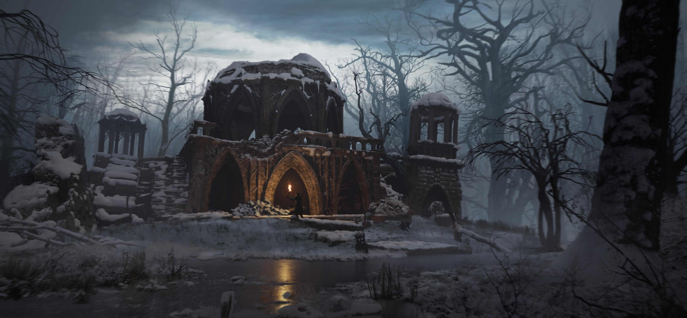

|  |
AncalimëAncalimë, l’ancienne cité des elfes du crépuscule. Aujourd’hui, il ne reste plus que des ruines hantées, un squelette de ce qui était autrefois un joyau d’architecture et de magie. Il est dit que les forces de Strahd von Zarovich ont mis cette cité à feu et à sang. Ce n’était pas seulement une conquête, la terre elle-même semble se souvenir de ce massacre. Une ombre menaçante enveloppe encore les ruines, une malédiction qui hante toute vie qui s’y aventure. Nous avons ressenti une présence palpable, glaciale qui nous observait et attendait le moment de frapper. C’est un endroit qui ne laisse pas les vivants en paix. La cité est en effet hantée par des ombres, des créatures éthérées, certainement des vestiges des anciens habitants d’Ancalimë, ou peut-être des manifestations de la malédiction qui pèse sur la ville. |